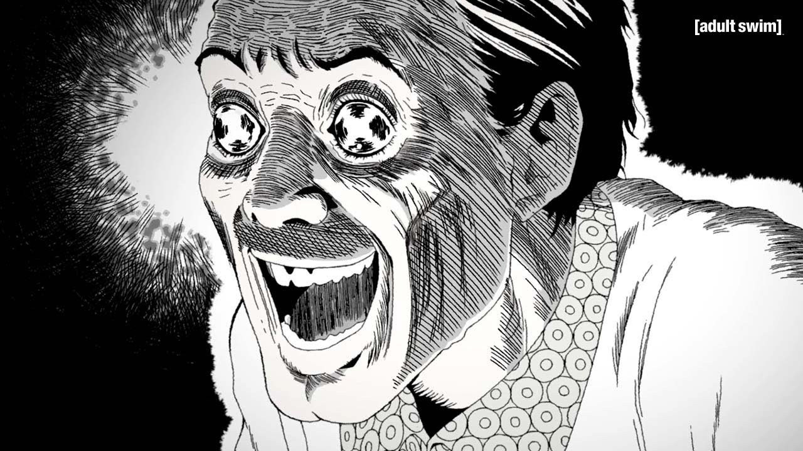
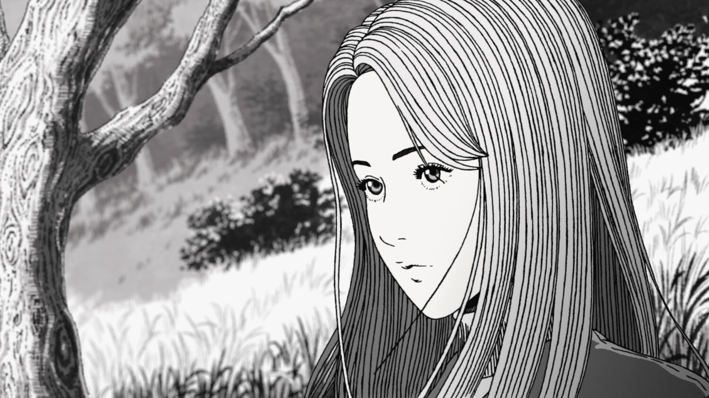

Uzumaki
Em Uzumaki (うずまき, "Espiral"), Junji Ito nos leva até a pacata cidade de Kurôzu-cho, onde uma estranha maldição começa a se manifestar.
Aos poucos, os moradores ficam obcecados por espirais — formas que aparecem em tudo: na água, no vento, no cabelo, nas próprias pessoas. O horror cresce de forma lenta e inevitável, corrompendo corpos, mentes e a própria cidade.
A história é contada através dos olhos de Kirie Goshima e seu namorado Shuichi Saito, que tentam resistir à influência cada vez mais insana das espirais. A obra mistura terror psicológico e grotesco, criando uma atmosfera de paranoia, desespero e um sentimento inescapável de que tudo está girando para a destruição.
Análise Psicológica de Uzumaki
Uzumaki é, em essência, uma metáfora profunda sobre a obsessão, a ansiedade coletiva e a desintegração da ordem mental e social. No mangá, a espiral é mais do que uma figura geométrica: ela se torna uma ideia fixa, uma obsessão inescapável. Os personagens de Kurôzu-cho começam a ver espirais em todo lugar e, gradualmente, perdem o controle sobre seus próprios corpos e mentes — um fenômeno que se parece muito com transtornos obsessivo-compulsivos (TOC) ou psicoses coletivas no mundo real. Essa fixação crescente lembra o conceito de "ideia delirante" da psicologia clínica: quando um pensamento irracional toma conta da mente e tudo passa a girar em torno dele, destruindo a percepção de realidade. Além disso, o que ocorre em Kurôzu-cho também pode ser interpretado como uma crítica à sociedade moderna: A forma como os moradores são "sugados" pela obsessão pode ser comparada ao modo como as pessoas reais são arrastadas por vícios sociais, massas de opinião ou culturas de medo. A espiral pode simbolizar o ciclo vicioso da ansiedade moderna: quanto mais se tenta escapar do medo, mais preso a ele se fica. E o fato de ninguém conseguir sair da cidade ecoa o sentimento de aprisionamento existencial que muitos sentem na vida cotidiana. Referências ao mundo real: Em psicologia social, o conceito de histeria coletiva descreve como grupos inteiros podem ser afetados por um mesmo delírio ou pânico — exatamente o que vemos se espalhar por Kurôzu-cho. O trabalho de Sigmund Freud sobre a repetição compulsiva ("compulsion to repeat") também se conecta: o desejo inconsciente de reviver traumas ou padrões destrutivos. Algumas análises ainda associam Uzumaki ao trauma histórico vivido pelo Japão — especialmente as marcas deixadas pela Segunda Guerra Mundial e pelos desastres nucleares, eventos que criaram uma sensação de maldição invisível e inescapável.
.gif)
Anime: Uzumaki
O anime Uzumaki, baseado no aclamado mangá de horror de Junji Ito, finalmente estreou após diversos adiamentos. A minissérie de quatro episódios foi lançada em 29 de setembro de 2024, com exibição no canal Adult Swim e disponibilidade na plataforma Max no Brasil.

Sinopse
A história segue Kirie Goshima e seu namorado Shuichi Saito na cidade fictícia de Kurouzu-cho, onde os habitantes começam a desenvolver uma obsessão por espirais. Esse fenômeno sobrenatural se manifesta de maneiras cada vez mais bizarras e aterrorizantes, afetando tanto o ambiente quanto os corpos e mentes das pessoas. Kirie tenta escapar da cidade e da maldição, mas descobre que fugir do destino espiralado é mais difícil do que parece.

Onde Assistir
Além da exibição no Adult Swim e na plataforma Max, o anime Uzumaki também está disponível para compra em plataformas digitais como Apple TV, Amazon Prime Video, Google Play, Fandango at Home e Microsoft Store.